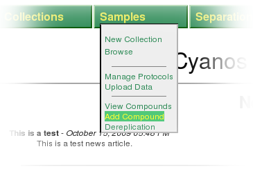
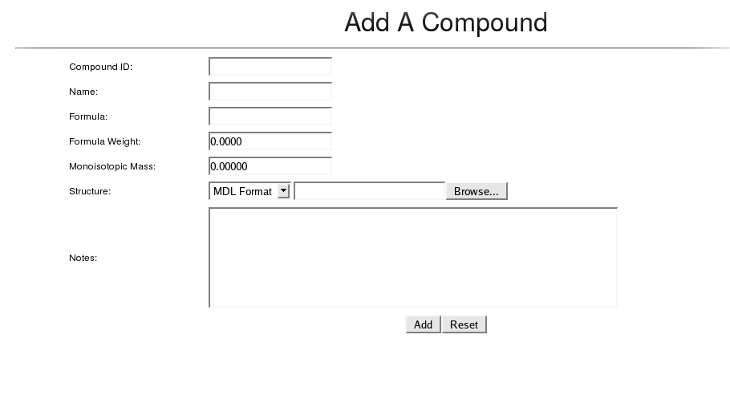
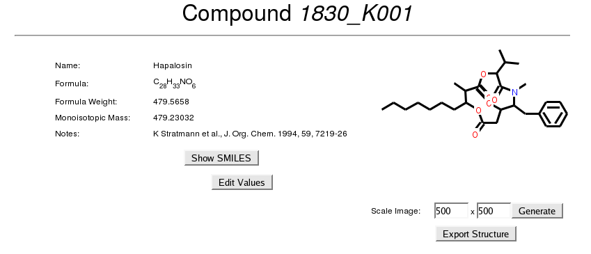
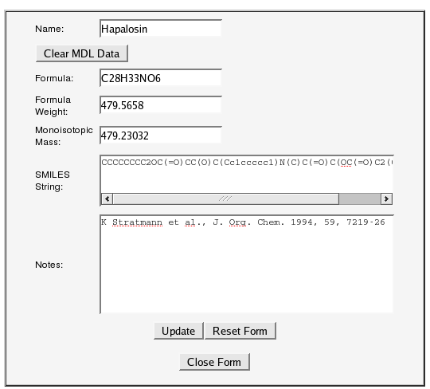
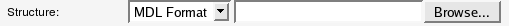
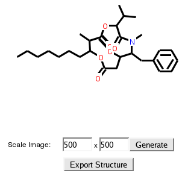

Select Add Compound from the Samples menu.

Enter information into the Add Compound form. CYANOS will calculate the formula, associated formula weight, and monoisotopic mass from an uploaded chemical structure file, either in MDL or CML format.

Click the Add Button.
The compound is now added to the database and can be viewed on the compound list, which can be viewed via the menu Samples > View Compounds.
Return to table of contentsCompound information can be accessed from various compound links within the CYANOS website as well as the compound list, which can be viewed via the menu Samples > View Compounds. Click on the name of a compound to view the information page for that compound.

The top part of the page displays the attributes of the compound. If the user has permission to modify the compound, the Edit Values button will be available and the user can click that button to display an editable form to change the compound's attributes.

If the compound record does not contain MDL data, an upload field will be available to select a MDL file to upload when the Update button is clicked.

If one includes an MDL upload, CYANOS will calculate the formula, formula weight, monoisotopic mass, and SMILES string of the compound from the uploaded MDL file and will disregard the values from the HTML form. Please Note: this behavior cannot be overridden.
One can clear the existing MDL data for a compound by clicking on the Clear MDL Data button. Please Note: clearing the MDL data will ONLY delete the assoicated MDL data and will NOT clear the values of the formula, formula weight, monoisotopic mass, and SMILES string.
If the compound record contains a chemical structure, i.e. MDL data, the compound form will display a 2D representation of the structure of the compound as well as options to download the MDL data, via Export Structure, or generate additional images via Generate

The lower part of the page has sections that list records associated to the compound. Each of these sections can be opened or closed by clicking on the green triangle to the left of the section title. For example, if a user clicked on Samples, the section would open to reveal a listing of samples that are instances of this compound.
Return to table of contentsRequired permissions listed in this table denote the role and permission bit, in parenthesis. Compound records lack project information thus, access would need to be granted either globally or for the "Null Project"
| Action | Required Permission |
| Add a new compound record | sample(Create) |
| Modify a compound record | sample(Write) |